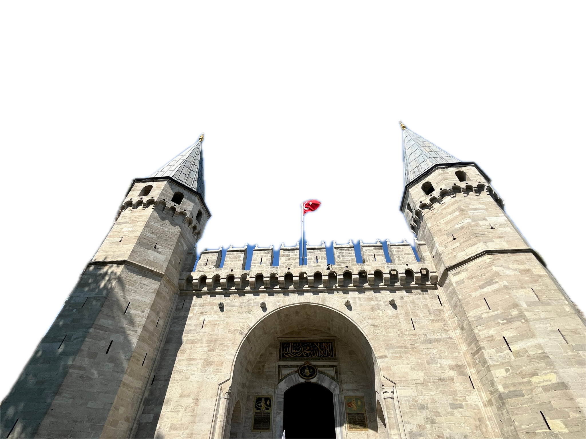

托普卡帕宫·伊斯坦布尔
托普卡帕宫位于伊斯坦布尔历史半岛，是奥斯曼帝国宫廷的重要所在。它由庭院、门楼、厅堂、园林与不同用途的建筑逐步组成，空间体验更像一系列相互连接的院落，而不是一座体量集中的宫殿。图片中的双塔门楼以厚实墙体和高耸塔尖强调入口，拱门则控制着内外空间的转换。穿过门楼后，开阔庭院与回廊带来尺度和明暗的变化，也体现宫廷活动的不同层级。宫内建筑在长期使用中不断增建，保存了多个时期的艺术与工艺。这里值得关注的不只是华丽装饰，更是门、墙、廊和庭院如何共同组织秩序，让行政、居住、礼仪与休憩空间在同一个建筑群中保持联系，又各有界限。